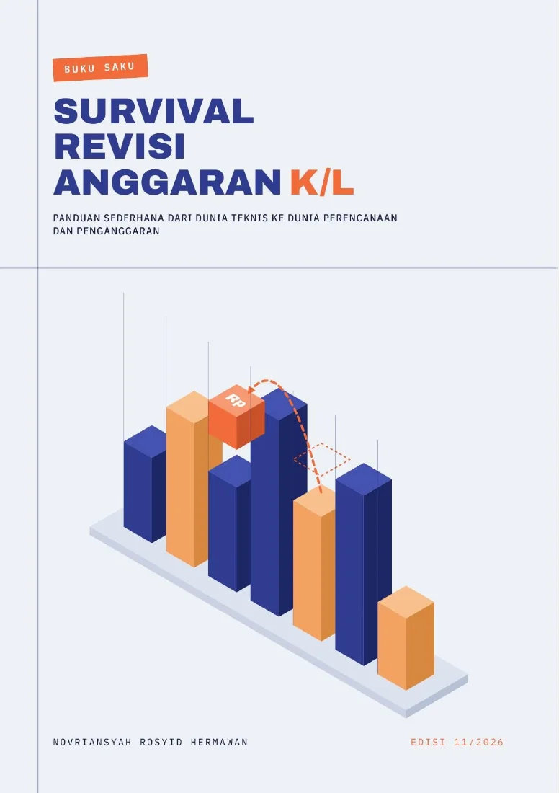

Gunakan toolbar PDF untuk zoom dan berpindah halaman. Jika PDF tidak tampil di perangkatmu, pilih “Buka PDF langsung”.
dan Realisasi Anggaran
Penyusunan PAGU
Dokumen anggaran,
lebih mudah ditemukan.
Temukan referensi, template, dan kelengkapan penyusunan anggaran dalam satu tempat.
Lihat katalog dokumenDari rencana sampai realisasi
Satu alur kerja.
Empat pintu masuk.
Pilih kebutuhanmu. Referensi dan dokumen pendukung ada di dalamnya.
Penyusunan
PAGU
Pagu Anggaran dan Pagu Alokasi, dari referensi sampai kelengkapan.
Buka penyusunan 02 / PerubahanRevisi
Anggaran
Usulan, penelitian, reviu, penelaahan, dan informasi progres.
Buka revisi 03 / PelaksanaanPOK
SEKJEN
Petunjuk Operasional Kegiatan menurut unit kerja Sekretariat Jenderal.
Lihat dokumen POK 04 / PelaporanRealisasi
Anggaran
Dokumen bulanan dan arsip realisasi tahun sebelumnya.
Telusuri realisasiBudget Knowledge Center
Temukan rujukan sebelum mulai bekerja.
Pilih topik atau cari judul pada katalog di bawah. Dokumen tetap dibuka dari sumbernya.
Butuh bantuan memahami topik?
Asisten di sudut kanan bawah membantu mencari rujukan dan menjelaskan isi Buku Saku Revisi Anggaran, lengkap dengan halaman sumber.
Katalog awal memakai tautan yang sudah tersedia di SiPERI. Dokumen privat dari basis pengetahuan Drive belum disalin atau dipublikasikan. Ketersediaan suatu dokumen bukan penetapan bahwa aturannya masih berlaku.
Pekerjaan lebih mudah.Regulasi, standar biaya, template, materi, dan rujukan anggaran.Jelajahi rujukan
Perpustakaan SiPERI · Edisi 11/2026
Buku Saku Revisi Anggaran
Revisi AnggaranDasar, kewenangan, alur revisi, studi kasus, dan checklist dalam satu panduan.Baca panduan

Untuk kantah dan unit kerja
PANTAU ATR/BPN
Peta Anggaran Terintegrasi Antar Unit. Buka aplikasi untuk memantau anggaran dan realisasi.
Katalog dokumen
Pagu Anggaran · 2026
Katalog belum dapat dimuat
Periksa koneksi, lalu coba kembali.
Belum ada hasil yang cocok
Coba kata yang lebih singkat, ubah tahap, atau pilih semua tahun. Tautan 2021 belum tersedia dalam katalog ini.
Lihat halaman sumber katalog
Tahun mengikuti halaman sumber. Periksa periode pada dokumen sebelum digunakan. Beberapa halaman dapat memuat dokumen dari tahun lain.